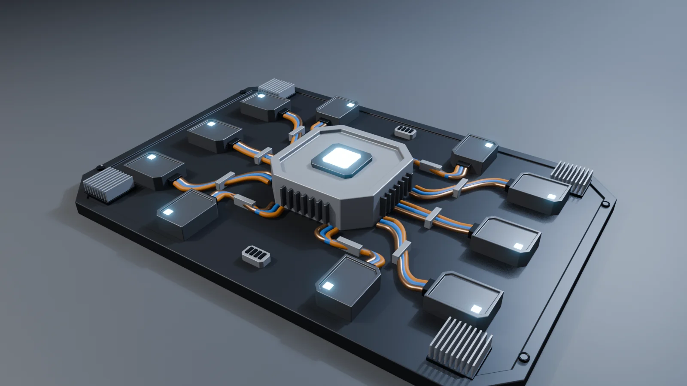
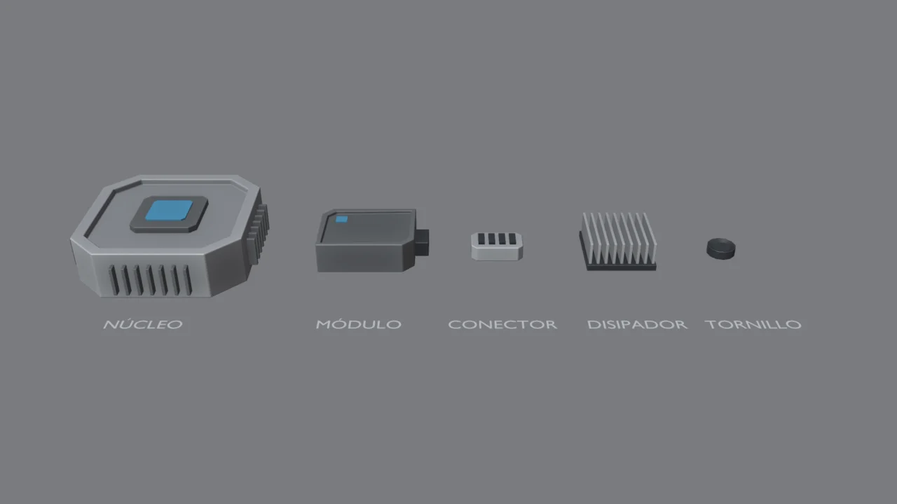
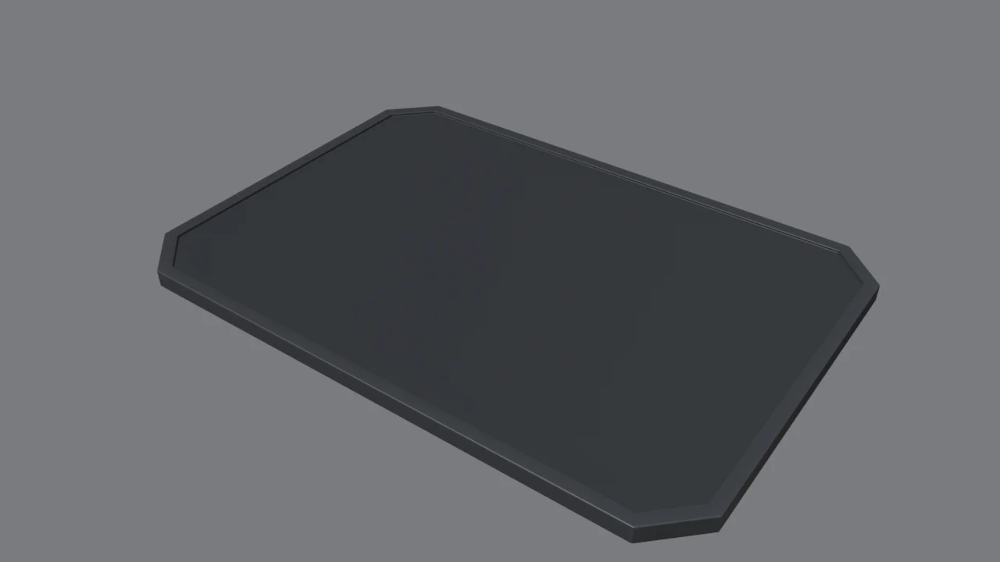
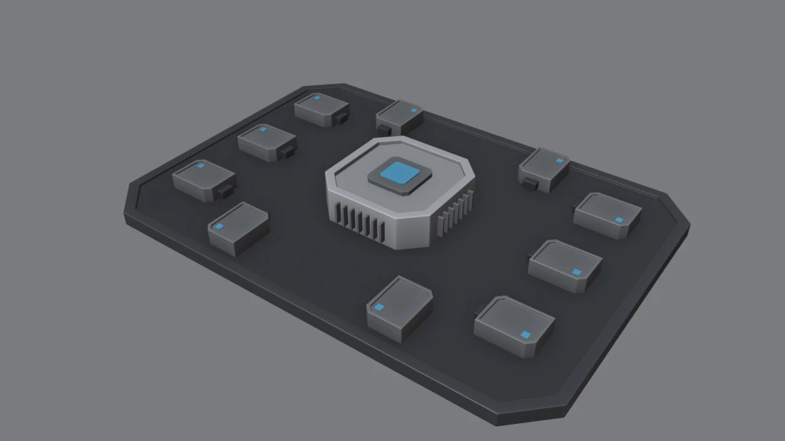
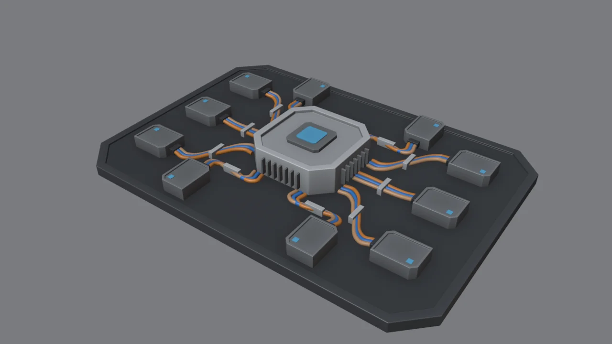
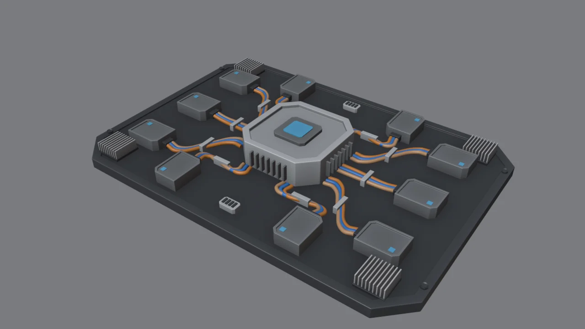
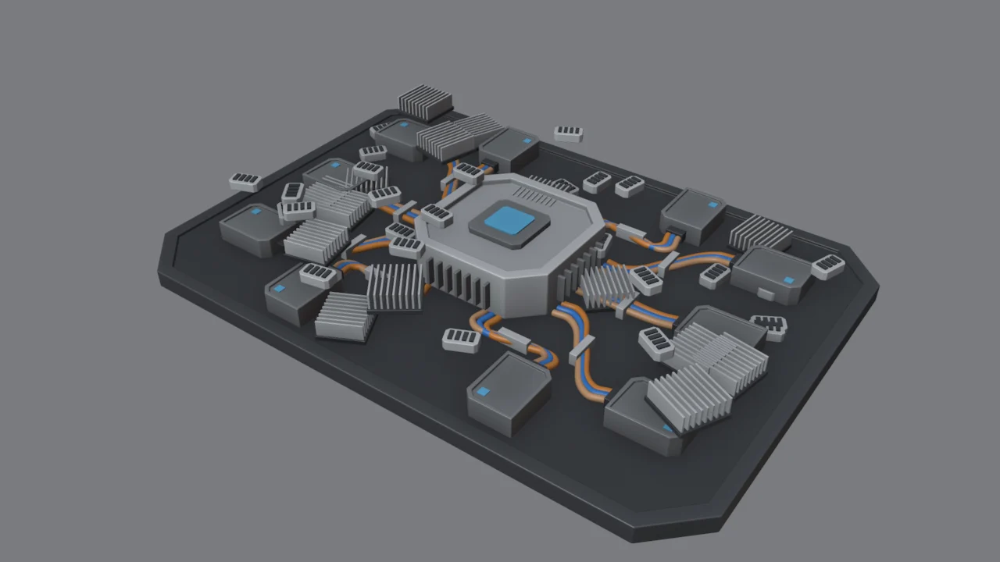

Lo que vas a forjar // objetivo

Aprenderás:
- Diseñar un kit de piezas reutilizables.
- Guardarlas en una biblioteca con el Asset Browser y arrastrarlas a cualquier proyecto.
- Hacer cables con curvas Bézier.
- Repartir el detalle con jerarquía y zonas de descanso.
Kitbash y greebles // concepto
Kitbash
Construir algo grande combinando piezas ya hechas. El término viene de los maquetistas de cine que «canibalizaban» kits de maquetas para crear naves espaciales.
Greebles
Detalles pequeños de superficie (conectores, aletas, tornillos) que dan escala y sensación de complejidad. No tienen que «hacer» nada, solo parecer que lo hacen.

¿Y los packs de kitbash? Hay packs gratuitos en internet, pero hacer tu propio kit es parte del aprendizaje y te da un estilo propio. Si algún día usas uno ajeno, revisa siempre la licencia (CC0 es la más libre).
Gírala paso a paso // 3D
Modela tu kit
Trabaja en un archivo nuevo, kit_mecha.blend. Cada pieza, en su origen (0, 0, 0) y apoyada en el suelo (Z = 0). Así luego encajará fácil en cualquier superficie.
| Pieza | Receta |
|---|---|
| Núcleo | Prisma achaflanado de 1 × 1 × 0.3 (cubo + Ctrl+B en las aristas verticales) → I 0.08 + E −0.04 en la tapa. Chip encima con una cara emisiva. Aletas: una placa fina + Array de 7 en cada lado. |
| Módulo | Caja de 0.42 × 0.32 × 0.14 con dos esquinas achaflanadas, tapa con Inset + Extrude, un LED emisivo y un puerto oscuro en un lado (por ahí saldrán los cables). |
| Conector | Caja pequeña achaflanada + una ranura oscura con Array de 4. |
| Disipador | Base oscura + una aleta fina con Array de 9. Es el greeble más agradecido que existe. |
| Tornillo | El del módulo 3. |
Todas las piezas llevan la receta del módulo 2: Shade Smooth + Bevel (Angle, Harden Normals). Así los bordes atrapan la luz incluso a escala pequeña.
Diseña con un lenguaje común. Fíjate en que todas las piezas comparten chaflanes a 45°, tapas hundidas y el mismo tipo de LED. Por eso parecen de la misma «marca» aunque sean distintas. Es lo que hace que un kit funcione.
Tu biblioteca con el Asset Browser
- Agrupa las partes de cada pieza en su propia colección: selecciónalas y M → New Collection (por ejemplo,
Modulo). - En el Outliner, clic derecho sobre la colección → Mark as Asset. Repite con cada pieza.
- Guarda el archivo en una carpeta fija, por ejemplo
Documentos/Kit Mecha/. Edit → Preferences → File Paths → Asset Libraries→ + y elige esa carpeta. Ponle de nombre «Kit Mecha».- En cualquier proyecto: cambia un área a Asset Browser (menú del tipo de editor, arriba a la izquierda de cada área), elige la biblioteca «Kit Mecha» y arrastra las piezas a la escena. Se colocan sobre la superficie que haya bajo el cursor.
Es tu inversión a largo plazo. Cada pieza que hagas en los siguientes módulos (pistones, bisagras, tomas de aire…) puede ir a esta biblioteca. Cuando llegues al androide tendrás decenas de piezas listas para arrastrar.
Miniatura: en el Asset Browser, clic derecho sobre un asset → Generate Preview, o desde el panel lateral (N) carga una imagen propia.
La placa

- Cubo con Dimensions
4×2.8×0.12→ Ctrl+A. - Chaflán de
0.3en las 4 aristas verticales (como la placa del módulo 3). - Tapa: I
0.1y E-0.02: queda un marco con el campo hundido. - Material oscuro, casi negro, con Metallic 0.5: así las piezas grises y los cables de color resaltan.
Colocar piezas

- Arrastra el núcleo al centro. Es el punto focal: lo más grande, lo más claro y lo único que brilla fuerte.
- Arrastra un módulo, gíralo (R Z
90) para que su puerto mire al núcleo y duplícalo con Shift+D: tres a cada lado y dos arriba y abajo. - Para apoyar piezas sobre superficies inclinadas: activa el imán (Shift+Tab), modo Face Project y Align Rotation to Target.
Orden visual: los módulos están en filas y columnas, y todos miran al centro. Esa disposición hace que la placa parezca diseñada por ingenieros y no tirada al azar. La simetría aproximada da orden. La asimetría pequeña (por ejemplo, dos módulos arriba y tres a los lados) da interés.
Cables con curvas

- Shift+A → Curve → Bezier. En modo edición, coloca el primer punto en el puerto del módulo y el último junto al núcleo. E extruye puntos nuevos y G mueve los puntos y sus manejadores.
- Si los manejadores te dan guerra: selecciona todo y V → Automatic. Blender suaviza la curva por ti.
- Pestaña de datos de la curva (icono verde) → Geometry → Bevel: Depth 0.022, Resolution 3 y Fill Caps ✓. La línea se convierte en un tubo.
- Duplica el cable (Shift+D) y desplázalo un poco a un lado: hazlo tres veces y tendrás un mazo. Un material distinto para cada uno: naranja, azul y cobre.
- Una abrazadera (una caja pequeña con bevel) en mitad del mazo: un floater que hace que los cables parezcan sujetos de verdad.
Cables que se apoyan: haz que el cable baje del puerto al suelo de la placa y vuelva a subir al llegar al núcleo. Los cables flotando en línea recta delatan un modelo 3D. Con la gravedad parecen reales.
Greebles… con cabeza

- Disipadores en las 4 esquinas: rellenan zonas vacías y «enmarcan» el conjunto.
- Dos conectores en los huecos de arriba y abajo.
- Tornillos en el marco.
- Para. En serio. Lo difícil del greeble no es ponerlo, sino saber cuándo dejar de ponerlo.
Jerarquía de detalle // diseño

RUIDOCON INTENCIÓNA la izquierda, 46 greebles más tirados al azar: incluso tapan el núcleo y flotan en el aire. Tiene más detalle y se ve peor: el ojo no sabe dónde mirar. A la derecha, unos pocos con intención.
| Principio | Qué significa |
|---|---|
| Grande · mediano · pequeño | Primero las formas grandes (placa, núcleo), luego las medianas (módulos) y al final las pequeñas (greebles). Si las pequeñas compiten con las grandes, todo se aplana. |
| Zonas de descanso | Deja superficies limpias (aproximadamente 70 % de calma y 30 % de detalle). El detalle solo luce si hay vacío a su alrededor. Fíjate en la tapa lisa del núcleo. |
| Punto focal | Una cosa manda: aquí, el núcleo brillante. Los cables llevan la mirada hacia él. |
| Lógica funcional | Todo parece hacer algo: los cables van de puerto a puerto, los disipadores están junto a lo que se calienta y los tornillos sujetan placas. Aunque sea inventado, que sea creíble. |
Esto vale para el androide y la espada. Las referencias que te gustan funcionan por esto: la hoja del arma tiene grandes zonas lisas y el detalle concentrado en el mecanismo de la empuñadura.
Reto: tu kit y tu placa // checklist
Crea al menos 2 piezas nuevas para tu kit (por ejemplo, un ventilador circular, un depósito con indicador o una toma de aire) y monta una placa con otra composición: un núcleo descentrado, dos núcleos conectados o una placa alargada para la espalda del androide.